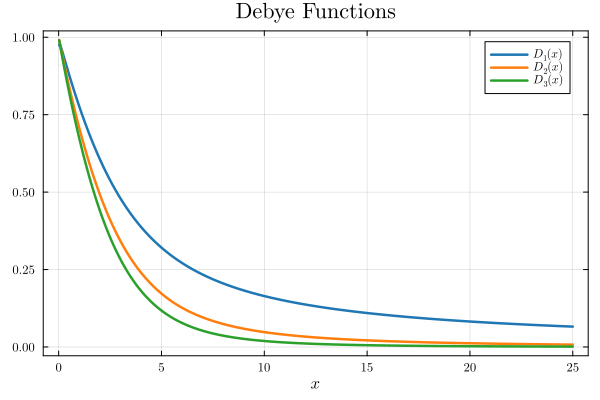

Functions
Coulomb wave functions
The Coulomb wave functions are solutions to the radial Schrödinger equation for a charged particle in a Coulomb potential. This package implements both the regular (F_ℓ(η, ρ)) and irregular (G_ℓ(η, ρ)) Coulomb wave functions, as well as auxiliary functions and normalization constants. The implementation follows the approach described in arXiv:1804.10976, using confluent hypergeometric functions and robust normalization. The functions are implemented for real and complex arguments, and special care is taken to ensure numerical stability across a wide range of parameters.
F(ℓ, η, ρ): Computes the regular Coulomb wave function using the normalization constant and the confluent hypergeometric function. For real arguments, the function returns the real part.G(ℓ, η, ρ): Computes the irregular Coulomb wave function as a combination of outgoing and incoming solutions.C(ℓ, η): Returns the normalization constant for the regular solution.η(a, k): Computes the Coulomb parameter.H⁺andH⁻: Outgoing and incoming Coulomb wave functions, respectively.
The implementation is robust for both small and large arguments, and auxiliary functions such as derivatives and normalization factors are also provided. See the reference for mathematical details.
x = range(0, stop=25, length=1000)
plot(x, real(F.(0.0, 0.3, x)), label=L"F_0(0.3,ρ)")
plot!(x, real(F.(0.0, -0.3, x)), label=L"F_0(-0.3,ρ)")
xlabel!(L"ρ")
title!("Regular Coulomb Wave Functions")Use a similar approach to plot the regular Coulomb functions for different a $\ell$
x = range(0, stop=25, length=1000)
plot(x, real(F.(1e-5, 5.0, x)), label=L"F_0(5.0,ρ)", linewidth=2)
plot!(x, real(F.(1.0, 5.0, x)), label=L"F_1(5.0,ρ)", linewidth=2)
plot!(x, real(F.(2.0, 5.0, x)), label=L"F_2(5.0,ρ)", linewidth=2)
plot!(x, real(F.(3.0, 5.0, x)), label=L"F_3(5.0,ρ)", linewidth=2)
title!("Regular Coulomb Wave Functions for Different ℓ")
xlabel!(L"ρ")Complex plots
using DomainColoring, FewSpecialFunctions, Plots
domaincolor(z -> F(0,z,z), [-2, 2, 0, 5], grid=true)Marcum Q-function
The Marcum Q-function is a generalized integral involving the modified Bessel function of the first kind. It is widely used in communications and radar signal processing. The implementation in this package is based on the methods described in arXiv:1311.0681v1, providing accurate results for a wide range of parameters.
MarcumQ(μ, a, b): Computes the Marcum Q-function for orderμ, non-centrality parametera, and thresholdb. The implementation uses series expansions, asymptotic expansions, and recurrence relations for efficiency and accuracy.dQdb(M, a, b): Computes the derivative of the Marcum Q-function with respect tob.
The code automatically selects the most appropriate algorithm depending on the input parameters.
bs = collect(range(0.0,10,length=100))
M1 = MarcumQ(1, 0.2, bs)
M2 = MarcumQ(1, 1.3, bs)
M3 = MarcumQ(1, 2.5, bs)
M4 = MarcumQ(1, 4.7, bs)
plot(bs, M1, label=L"a=0.2")
plot!(bs, M2, label=L"a=1.3")
plot!(bs, M3, label=L"a=2.5")
plot!(bs, M4, label=L"a=4.7")
plot!(xlabel="b", ylabel=L"Q(1,a,b)", title="Marcum Q-function")Derivative of the Marcum Q-function
bs = collect(range(0.0,10,length=100))
M1 = dQdb(1, 0.2, bs)
plot(bs, M1, label=L"a=0.2")Parabolic cylinder functions
The parabolic cylinder functions U(a, x) and V(a, x) are solutions to the parabolic cylinder differential equation. The implementation is based on series expansions and asymptotic formulas, following standard references. The code is optimized for both small and large arguments, and handles edge cases robustly.
U(a, x): Computes the parabolic cylinder function of the first kind using a combination of series and asymptotic expansions.V(a, x): Computes the second, linearly independent solution, using similar techniques.
The implementation is adapted from S. Zhang and J. Jin, 'Computation of Special Functions' (Wiley, 1966) and other standard sources.
xs = collect(-2.5:0.05:2.5)
plot(xs, U(0.5, xs), label=L"a=0.5")
plot!(xs, U(2.0, xs), label=L"a=2.0")
plot!(xs, U(3.5, xs), label=L"a=3.5")
plot!(xs, U(5.0, xs), label=L"a=5.0")
plot!(xs, U(8.0, xs), label=L"a=8.0")
plot!(xlabel="x", ylabel=L"U(a,x)", title="Parabolic Cylinder Function U(a,x)")V(a, x)
The function V(a, x) is a second, linearly independent solution to the same differential equation satisfied by U(a, x). The implementation of V(a, x) in FewSpecialFunctions.jl uses a combination of convergent series and asymptotic expansions adapted from standard references.
xs = collect(range(-2.5,2.5,length=100))
V1 = V(0.5, xs)
V2 = V(2.0, xs)
V3 = V(3.5, xs)
V4 = V(5.0, xs)
plot(xs, V1, label=L"a=0.5")
plot!(xs, V2, label=L"a=2.0")
plot!(xs, V3, label=L"a=3.5")
plot!(xs, V4, label=L"a=5.0")
ylims!(-3.0, 3.0)
plot!(xlabel="x", ylabel=L"V(a,x)", title="Parabolic cylinder function V(a,x)")Debye functions
The Debye functions are given by
\[ D_n(\beta,x)= \frac{n}{x^n} \int_0^x \frac{t^n}{(\text{e}^t-1)^\beta} \, \text{d}t\]
And
x = range(0,stop=25,length=1000)
plot(x,debye_function(1.0,1.0,x),label=L"D_1(x)")
plot!(x,debye_function(2.0,1.0,x),label=L"D_2(x)")
plot!(x,debye_function(3.0,1.0,x), label=L"D_3(x)")
title!("Debye Functions")
xlabel!(L"x")
Fermi-Dirac integrals
In solid state physics the Fermi-Dirac integral is given by
\[ F_j(x) = \int_0^\infty \frac{t^j}{\exp(t-x)+1} \, dt.\]
Approximations to this and the normalized case for $j=-1/2$, $j=1/2$, $j=3/2$ and $j=5/2$ are implemented to varying accuacy. Most are of the order of $10^{-12}$.
Here is an example
x = range(0,stop=100,length=10000)
plot(x,FermiDiracIntegralNorm.(-1/2,x),label=L"F_{-1/2}(x)")
plot!(x,FermiDiracIntegralNorm.(1/2,x),label=L"F_{1/2}(x)")
plot!(x,FermiDiracIntegralNorm.(3/2,x),label=L"F_{3/2}(x)")
plot!(x,FermiDiracIntegralNorm.(5/2,x),label=L"F_{5/2}(x)")
xlabel!(L"x")
title!("Fermi-Dirac Integral")Clausen functions
The Clausen functions are implemented for orders 1 through 6, using a combination of series summation and analytic continuation. The code is based on the methods described in this paper.
Clausen(n, θ): Computes the Clausen function of ordernat angleθ.F_clausen,f_n,Ci_complex: Auxiliary functions for advanced use and analytic continuation.
θ = collect(range(0, 2π, length=100))
plot(θ,Clausen.(1, θ), label=L"C_1(θ)")
plot!(θ,Clausen.(2, θ), label=L"C_2(θ)")
plot!(θ,Clausen.(3, θ), label=L"C_3(θ)")
plot!(θ,Clausen.(4, θ), label=L"C_4(θ)")
xlabel!(L"\theta")
title!("Clausen Functions")Fresnel integrals
The Fresnel integrals C(x) and S(x) are implemented using the complex error function, matching the NIST and MATLAB conventions. The implementation is accurate for both real and complex arguments, and provides auxiliary values for advanced applications.
FresnelC(x): Computes the Fresnel cosine integral.FresnelS(x): Computes the Fresnel sine integral.FresnelE(x): Auxiliary value,C(x) + i S(x).
All functions are implemented with attention to numerical stability and efficiency, and references to the original papers are provided for further reading.
xes = collect(range(0, 5, length=250))
plot(xes, FewSpecialFunctions.FresnelC.(xes), label=L"C(x)")
plot!(xes, FewSpecialFunctions.FresnelS.(xes), label=L"S(x)")